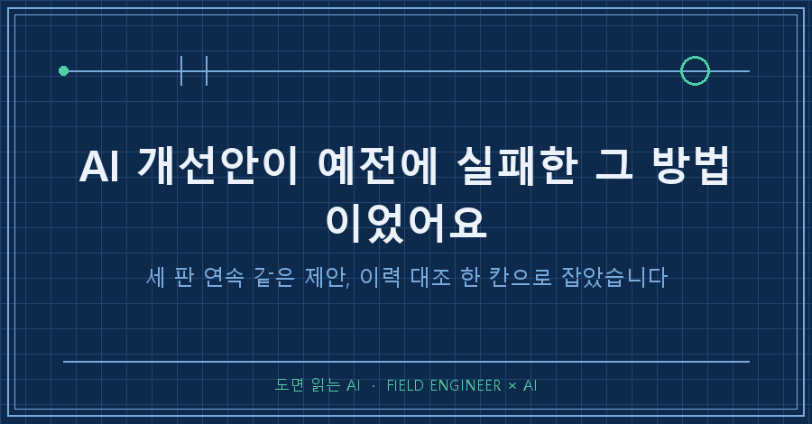
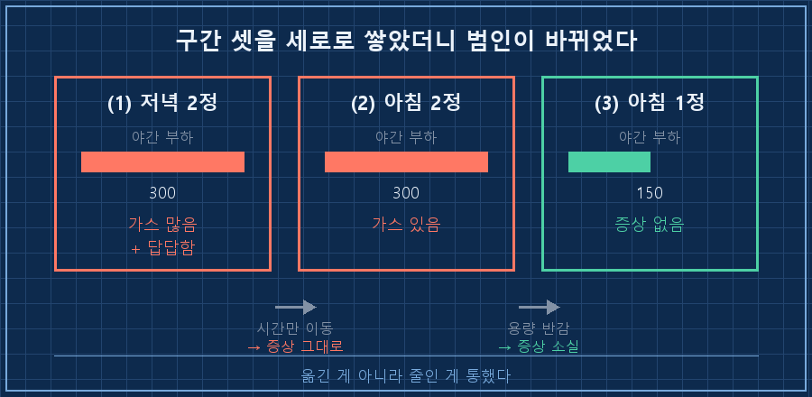
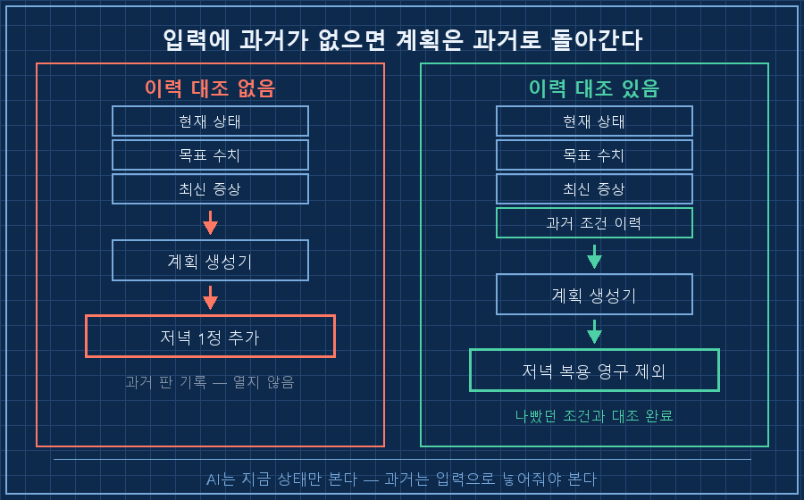
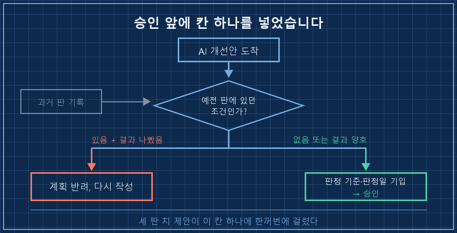

AI 개선안을 여섯 판째 그대로 받아 적고 있었습니다. 개인 건강 루틴을 AI한테 정리시켜 두는데, 판을 새로 낼 때마다 맨 뒤에 "2주 뒤엔 이렇게 늘리세요" 한 줄이 꼭 붙어 나오거든요.
그 한 줄이 제가 예전에 제일 고생했던 조합이었어요. 그것도 세 판 연속으로요.
한 문장으로 먼저 적을게요.
AI 개선안은 지금 상태만 보고 나옵니다. 지금 부족하니 채우자, 지금 증상이 없으니 늘리자. 다 맞는 말인데 여기에 "그 조건 예전에 이미 해봤나"가 빠져 있어요. 그래서 저는 개선안을 받아들이기 전에 과거 이력 대조 한 칸을 앞에 넣었습니다. 넣자마자 세 판 치가 한꺼번에 걸렸고요.
2026년 9월 기준이고요. 제 몸 하나로 관찰한 개인 기록이라 성분이나 용량 얘기가 나와도 누구한테 권하는 처방이 아닙니다. 다만 AI한테 뭔가를 꾸준히 관리시키고 계시다면 품목이 뭐든 똑같이 걸리는 함정이에요.
현장에서 설비 돌리는 일로 밥을 먹은 지 십오 년째입니다. 이 바닥에선 같은 고장이 두 번 나면 제일 먼저 설비 이력카드를 꺼내요. 지난번엔 뭘 만졌고 그래서 어떻게 됐는지 보려고요. 그런데 정작 제 루틴 문서에는 그 이력카드가 없었습니다..
판마다 붙어 나오던 한 줄
문서가 여섯 판째였어요. 다섯 번째 판과 여섯 번째 판 맨 뒤에 똑같은 문장이 있었습니다.
[다음 단계]
2주간 증상 없으면 저녁에 1정 추가 → 목표 용량 도달그리고 훨씬 앞선 판에는 이런 조치가 있었어요. "아침 1정 + 저녁 1정으로 나눠서 복용." 그때는 오히려 증상이 있어서 그걸 잡겠다고 만든 조치였습니다.
셋을 나란히 놓으니 방향이 같더라고요. 전부 저녁 복용을 재도입하는 쪽이었습니다. 저녁에 먹는 걸 없앴다가, 반으로 나눠 되살리고, 다시 통째로 추가하자고 하고요.
"예전에 그렇게 먹었을 때 답답했었어요"
이 흐름을 깬 건 검증 도구가 아니라 제가 지나가듯 남긴 한 줄이었어요.
"처음에 저녁에 두 알 먹고 자기 전에 다른 걸 챙길 때
가스가 많이 차고 답답했었음.
아침 한 알로 바꾸고 나서는 전혀 그런 느낌 없음."여기서 AI가 한 반응이 저는 좀 인상 깊었습니다. 제 말을 그대로 받아 적지도 않았고, "기억은 부정확할 수 있습니다" 하고 흘리지도 않았어요. 옛날 기록을 뒤져서 시기를 맞춰봤습니다.
몇 월에 어떤 판이 돌고 있었는지, 그때 실제 복용 시간이 아침이었는지 저녁이었는지를요. 결과는 제 진술이랑 딱 맞았어요. 말이 맞는지 따지기 전에 기록부터 열어본 게 이 건에서 제일 잘한 판단이었다고 봅니다.
세로로 쌓으니 범인이 바뀌었어요
맞춰본 결과가 세 구간으로 정리됐습니다.
| 구간 | 복용 시간·양 | 문제 성분 부하 | 취침 전 다른 미네랄 | 증상 |
|---|---|---|---|---|
| ① | 저녁 2정 | 300 (야간) | 있음 | 가스 많음 + 답답함 |
| ② | 아침 2정 | 300 (주간) | 있음 | 가스 있음 |
| ③ | 아침 1정 | 150 (주간) | 있음 | 없음 |
②번 줄이 결정적이었어요. 시간만 저녁에서 아침으로 옮겼는데 증상이 그대로 남았거든요. 그러니까 시간이 1차 원인이 아니었습니다. 그동안 제가 한 조치는 죄다 시간을 옮기는 것뿐이었는데도요.
①과 ②를 비교하면 야간에만 "답답함"이 하나 더 붙습니다. 그러니 밤은 원인이 아니라 악화 요인이에요. 그리고 ③에서 부하를 반으로 줄이자 증상이 사라졌고요. 용량을 올리면 나빠지고 내리면 좋아지는, 교과서 같은 용량-반응이 세 줄 안에 다 있었습니다.
덤으로 억울하게 의심받던 것도 하나 풀렸어요. 취침 전에 먹던 미네랄은 세 구간 내내 똑같이 먹었는데 ③에서 증상이 0이거든요. 그동안 밤에 먹는다는 이유만으로 계속 용의선상에 있던 항목이었습니다.

왜 세 판 연속 같은 제안이 나왔을까
여기서부터가 이 글의 진짜 이야기예요.
AI가 본 자료는 정확했습니다. 현재 섭취량이 얼마고, 권장량이 얼마고, 그래서 얼마가 모자란다. 계산은 하나도 안 틀렸어요. 모자란 만큼 채우자는 결론도 자연스럽고요.
안 본 게 하나 있었을 뿐입니다. 그 조건을 예전에 이미 돌려봤는지.
기록은 멀쩡히 있었어요. 뒤지라고 시키질 않았을 뿐이에요. 그리고 제가 짐작하기로는 이게 우연이 아닙니다. 목표치를 가장 빨리 채우는 조합은 대체로 부하를 가장 크게 거는 조합이거든요. 예전에 저를 제일 힘들게 했던 그 조합이 정확히 그거였고요. 그러니까 과거를 안 보면 개선안은 자꾸 그 자리로 되돌아갑니다.
제일 뜨끔했던 건 중간에 있던 분할 조치예요. 그건 증상을 잡겠다고 만든 조치였는데, 실제로는 없앴던 저녁 복용을 절반만큼 되살린 조치였습니다. 개선이라고 이름 붙인 조치가 악화 조건을 다시 들여놓은 거죠..

이쯤에서 나오는 질문 둘
Q. AI한테 "예전 기록도 같이 봐" 한 줄 넣으면 끝 아닌가요?
저도 그렇게 시작했는데, 관건은 언제 보게 하느냐더라고요. 계획을 다 짠 다음에 보게 하면 이미 결론이 나 있어서 확인 도장만 찍고 지나갑니다. 저는 순서를 앞으로 뺐어요. 계획 초안을 쓰기 전에 "이 조건에 이력이 있나"부터 뽑게 합니다. 이력이 나오면 그게 입력이 되고, 안 나오면 그때 새로 짜는 거죠.
Q. 사람 기억이 틀렸으면 어떡하죠?
그래서 제 진술 하나로 판을 바꾸진 않았어요. 옛 기록으로 시기를 맞춰 확인했고, 두 구간이 다 들어맞아서 그때 채택했습니다. 안 맞았으면 "미검증"으로 표시해두고 그냥 뒀을 거예요. 진술은 단서지 근거가 아니니까요. 다만 순서는 확실히 배웠습니다 — 진술을 의심하기 전에 기록을 먼저 연다.
그래서 승인 앞에 칸을 하나 넣었습니다
이제 AI가 개선안을 내밀면 세 가지를 먼저 물어봅니다.
1. 이 조합, 예전 판에 등장한 적 있나? 있으면 그때 결과부터 가져오게 합니다
2. 가장 나빴던 조건과 겹치는 항목이 하나라도 있나? 하나만 겹쳐도 계획을 다시 씁니다
3. 성공 판정을 언제, 무엇으로 하나? 이번 목표는 "좋아짐"이 아니라 악화 없음이에요. 이미 증상이 0이라 더 좋아질 자리가 없거든요
3번을 굳이 적어둔 이유가 있어요. 판정 기준을 "개선"으로 잡으면, 좋아진 게 없다는 이유로 또 뭘 늘리자는 얘기가 나옵니다. 멀쩡한 상태를 흔드는 계획이 그렇게 생겨요.
그리고 관리 원칙에 두 줄을 새로 박았습니다.
- 미네랄은 야간을 피한다
- 본인 실측 > 문헌 추정두 번째 줄이 생각보다 셉니다. 문헌은 평균을 말하고 제 관찰은 표본 1이지만, 그 표본이 정확히 저거든요. 세 구간짜리 관측 하나가 몇 달치 추론을 이겼습니다!

세 판을 지나는 동안 저는 그 마지막 줄을 매번 읽었어요. 읽고 "그래 2주 뒤에 그렇게 하자" 하고 넘겼고요. 틀린 계산도 아니었고 이상한 문장도 아니었으니까요. 그게 이 함정의 성질인 것 같습니다. 개선안은 틀려 보이지 않는 방식으로 과거로 돌아갑니다.
여러분의 AI가 내민 다음 단계 계획은 어떠신가요? 예전에 한 번 해보고 접었던 방법이, 이름만 바꿔서 돌아와 있진 않던가요.
폐기한 계획이 왜 폐기됐는지까지 makefield.ai에 판 번호별로 남겨두고 있어요.
태그: #AI개선안 #AI계획검증 #AI과거기록대조 #AI가같은제안반복 #AI결과물검수 #AI에게일시키기 #AI판단검증 #AI기록관리 #AI자동화구축 #AI지식관리 #AI비서만들기 #AI활용법 #AI실무활용 #개인AI에이전트 #도면읽는AI